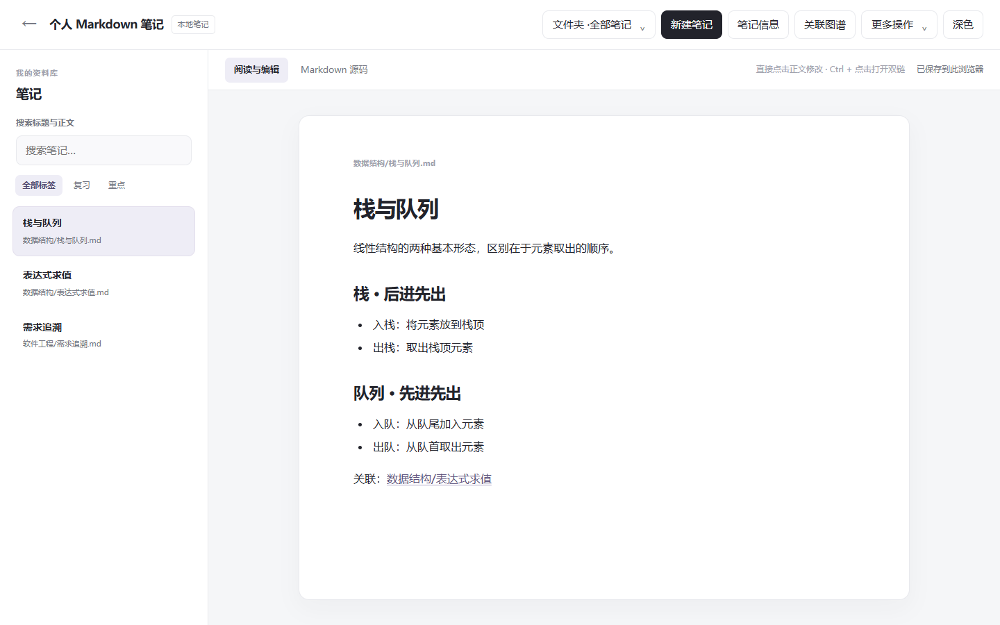
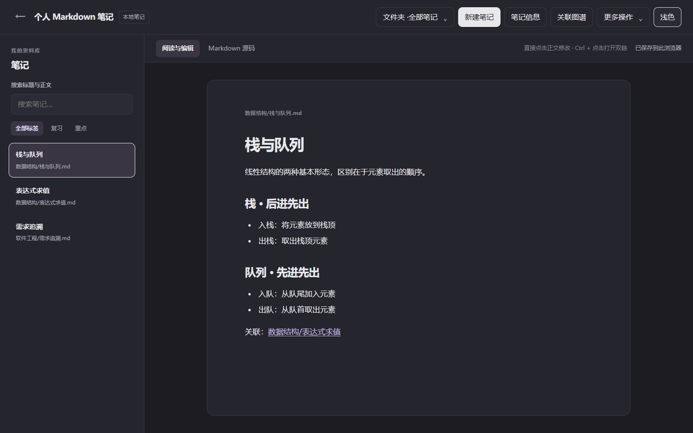

直接使用网页版
点击“进入工作区”即可使用，无需下载。笔记自动保存在当前浏览器，请定期通过“备份”导出保存。支持导入笔记文件或整个 Markdown 文件夹，不导入图片。
进入工作区 →

用 Markdown 记录学习内容，通过文件夹、标签和全文搜索整理资料。双向链接与关联图谱帮助你串联知识；回收站支持查看、选择恢复和永久删除笔记。
点击“进入工作区”即可使用，无需下载。笔记自动保存在当前浏览器，请定期通过“备份”导出保存。支持导入笔记文件或整个 Markdown 文件夹，不导入图片。
进入工作区 →下载 ZIP 压缩包，完整解压后双击 PersonalMarkdownNotes.exe。适用于 Windows 11 64 位，无需另外安装 .NET。打开或创建自己的笔记库即可开始。
下载桌面版 1.2.6 ↘